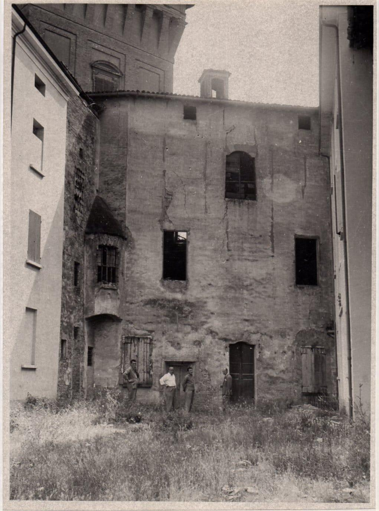

TAPPA 9: Torrione della Rocca
9.1 - Torrione della Rocca

Da piazza M.M. Boiardo, costeggiando la Rocca si arriva sotto al Torrione dove un dispositivo di memoria con codice QR ricorda l'esistenza della Sinagoga che sorgeva di fianco, sul retro dell'antica casa Padoa-Almansi, una delle più antiche famiglie ebree scandianesi (oggi sede di un ristorante).
Costruita nel corso del 1700, nel momento di massimo splendore della comunità ebraica scandianese, riccamente decorata all'interno, vi si accedeva dalla gradinata che allora saliva da via Marconi,e anche dall'interno di casa Padoa-Almansi, essendo stata questa famiglia tra i principali sostenitori e finanziatori della sua realizzazione. La Sinagoga rimase in funzione fino ai primi anni del secolo scorso, e cessò la sua funzione quando la comunità ebraica scandianese si ridusse notevolmente di numero fino a scomparire, tra la fine dell’800 e il primo decennio del ‘900. Ragioni economiche e sociali portarono infatti la maggior parte dei suoi componenti a trasferirsi a Modena o a Reggio Emilia, dove le attività economiche erano più fiorenti e consentivano un migliore tenore di vita. Scomparve così gradualmente una presenza che aveva caratterizzato positivamente la storia della comunità scandianese per alcuni secoli, fino dalla seconda metà del 1400, accolta e protetta dalla lungimiranza e dall'apertura culturale dei Boiardo, allora signori di Scandiano.
Negli anni ’50, all'interno delle opere di risanamento del paese dell'immediato dopoguerra, l’Amministrazione comunale acquisì la Sinagoga dalla famiglia Padoa-Almansi e ne decise qualche anno dopo la demolizione, effettuata nell'ottobre 1960, a causa delle precarie condizioni dell’immobile, che si presentava lesionato. Il progetto prevedeva la realizzazione di un collegamento viario tra via Marconi e viale della Rocca che non fu mai realizzato. Con il senno di poi, andò persa una testimonianza preziosa, dal punto di vista architettonico, storico e culturale. Purtroppo in quegli anni non erano diffuse le stesse sensibilità di tutela del patrimonio storico che sentiamo oggi, e le priorità di risanamento di un luogo del centro storico che appariva fortemente deteriorato, e forse a rischio di crollo, prevalsero su altre considerazioni.
Costruita nel corso del 1700, nel momento di massimo splendore della comunità ebraica scandianese, riccamente decorata all'interno, vi si accedeva dalla gradinata che allora saliva da via Marconi,e anche dall'interno di casa Padoa-Almansi, essendo stata questa famiglia tra i principali sostenitori e finanziatori della sua realizzazione. La Sinagoga rimase in funzione fino ai primi anni del secolo scorso, e cessò la sua funzione quando la comunità ebraica scandianese si ridusse notevolmente di numero fino a scomparire, tra la fine dell’800 e il primo decennio del ‘900. Ragioni economiche e sociali portarono infatti la maggior parte dei suoi componenti a trasferirsi a Modena o a Reggio Emilia, dove le attività economiche erano più fiorenti e consentivano un migliore tenore di vita. Scomparve così gradualmente una presenza che aveva caratterizzato positivamente la storia della comunità scandianese per alcuni secoli, fino dalla seconda metà del 1400, accolta e protetta dalla lungimiranza e dall'apertura culturale dei Boiardo, allora signori di Scandiano.
Negli anni ’50, all'interno delle opere di risanamento del paese dell'immediato dopoguerra, l’Amministrazione comunale acquisì la Sinagoga dalla famiglia Padoa-Almansi e ne decise qualche anno dopo la demolizione, effettuata nell'ottobre 1960, a causa delle precarie condizioni dell’immobile, che si presentava lesionato. Il progetto prevedeva la realizzazione di un collegamento viario tra via Marconi e viale della Rocca che non fu mai realizzato. Con il senno di poi, andò persa una testimonianza preziosa, dal punto di vista architettonico, storico e culturale. Purtroppo in quegli anni non erano diffuse le stesse sensibilità di tutela del patrimonio storico che sentiamo oggi, e le priorità di risanamento di un luogo del centro storico che appariva fortemente deteriorato, e forse a rischio di crollo, prevalsero su altre considerazioni.